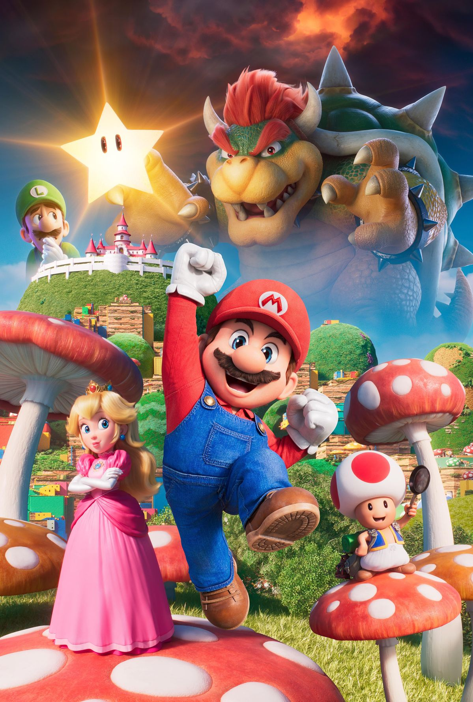
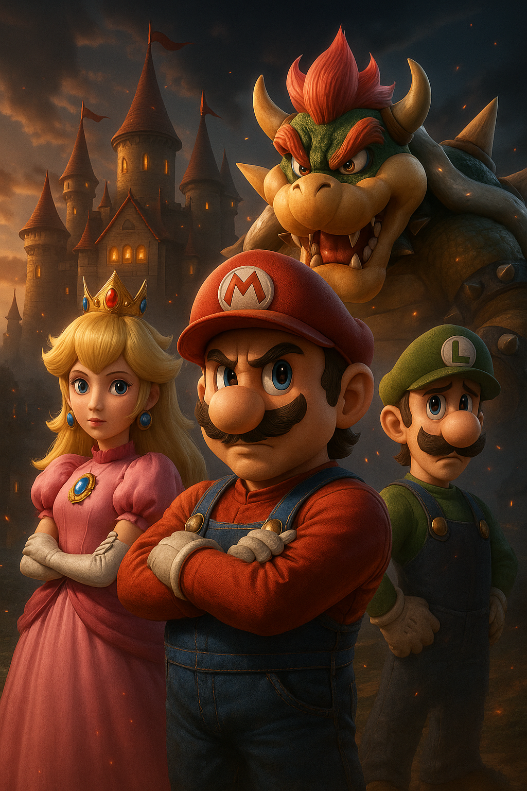
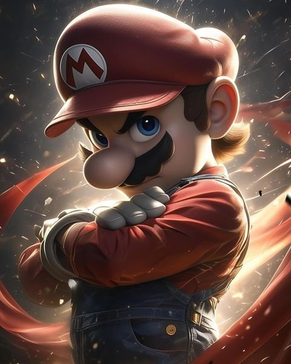
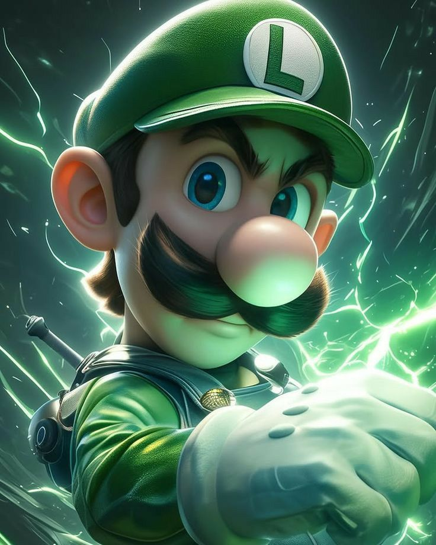
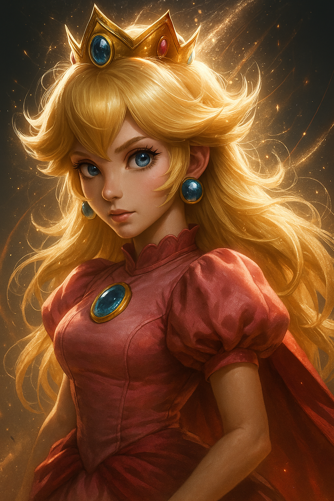
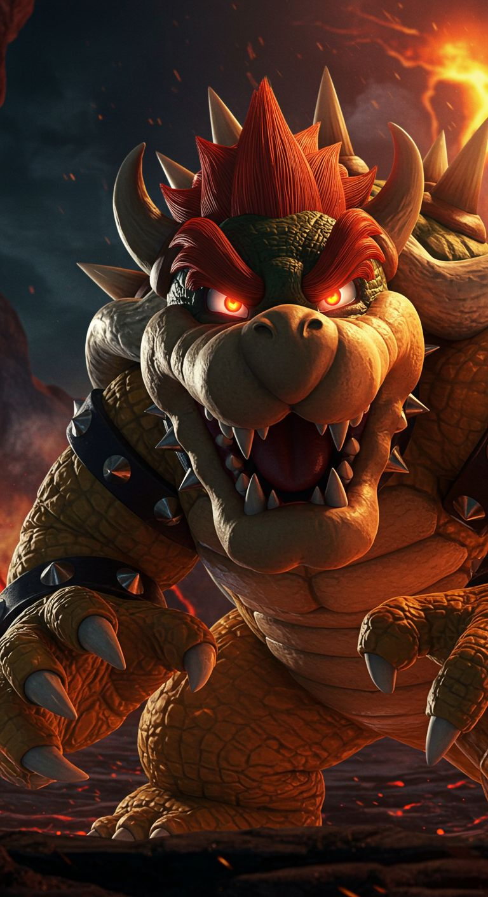

Super Mario
Super Mario Mario é o icônico encanador da Nintendo, reconhecido mundialmente por sua bravura, simpatia e espírito aventureiro. Ele vive no Reino dos Cogumelos, onde enfrenta diversos desafios para salvar a Princesa Peach das garras do vilão Bowser. Além de sua coragem, Mario é conhecido por sua habilidade em saltos precisos, uso de power-ups como o cogumelo que o faz crescer, e o traje de fogo que permite lançar bolas de fogo. Ele também participa de inúmeras competições esportivas e corridas de kart com seus amigos e inimigos, tornando-se um dos personagens mais versáteis e amados dos videogames.

Mario
O herói principal do Reino dos Cogumelos.

Luigi
Irmão mais novo de Mario, ágil e carismático.

Princesa Peach
Governante do Reino Cogumelo, doce, corajosa e frequentemente salva por Mario.

Bowser
O rei dos Koopas, eterno rival de Mario.